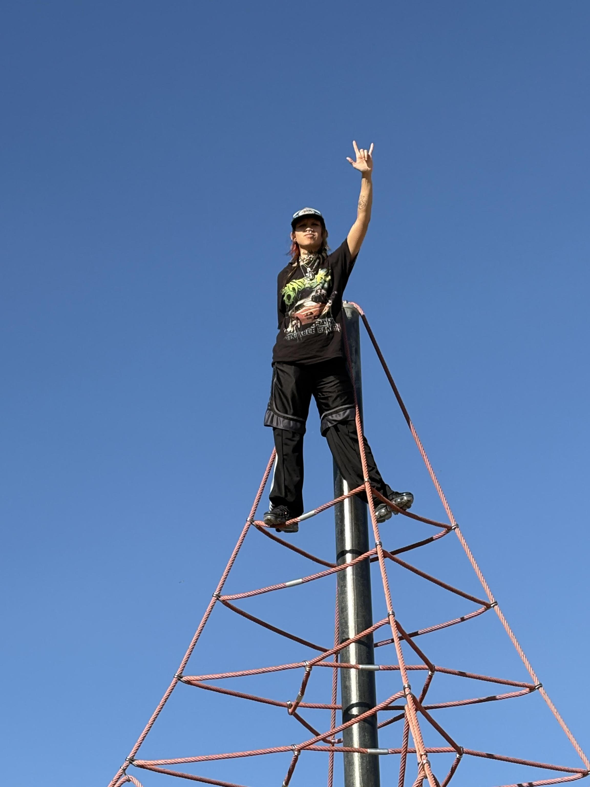

Recognizing the urgent and ever-present need to strengthen the links of international solidarity, we called on musicians to reflect on the theme of weaving. Liyang is the Manobo word for a traditional woven basket made from abaca, rattan, and bamboo. It is a symbol of the collective struggles we carry together. Holding this message of solidarity in song, the mixtape interlaces across two discs: WARP and WEFT.
Last year, Liyang Network launched our three ongoing campaigns: Education is a Right, Defend the Defenders, and Climate Justice. These campaigns bind together the struggles that communities and activists face on the ground in Mindanao, through supporting education for children of activists; defending political prisoners and targeted activists through material support and legal counseling; and delivering crucial aid to communities in the wake of climate catastrophe. This work is vital to sustaining a long-building, broad-based movement that unites diverse sectors - farmers, workers, Indigenous Peoples, women and youth - towards the common goal of ending imperialist exploitation in the Philippines and throughout the world.
WEFT features three special recordings of performances from Lumad bakwit school graduates. “Naglahong Paraiso,” a cover of the song by Musikang Bayan, invokes a longing for reconnection with the land amidst dispossession by the hands of the Philippine Government and foreign capital. “Paragas ki” or “Let’s continue the struggle!” was written in 2018 by the graduating class of a bakwit school, since closed by state-sponsored attacks. This recording commemorates the continuing legacy and inspiration borne from Lumad education and political unity. Their words remind us that through international solidarity, we can link arms (kapitbisig) across oceans, and join in the fight against imperialist plunder of land and life. Our collective strength grows through each reinforcing contribution, as in the words of Bai Bibyaon Ligkayan Bigkay: “our story continues to be woven.”
This mixtape is dedicated to the memory of Lawu, a long-time supporter of Liyang and the struggle for the defense of land and human rights in Mindanao and throughout the world. Through their creative collaboration with dagger wound as Mirrored Fatality and their personal advocacy, they used their art and their talents to weave together struggles against displacement, militarization and state violence abroad with the people’s movement in the Philippines. They remain an exemplary force for us in practicing solidarity and using every day to envision and support the creation of a better world.
Arm linked in arm, we weave our struggles into one. We carry the collective farther when bound together. From mountain to mountain, hearing one song of many voices. Paragas ki!
All proceeds of this mixtape go to Liyang Network’s ongoing work to sustain those on the frontlines of land, environmental, and human rights defense in Mindanao, Philippines.
Liyang Network is a local to global advocacy network that amplifies the calls to action of frontline environmental and human rights defenders in Mindanao, Philippines. Originally founded in 2019 in UCCP Haran evacuation center Mindanao, it was born out of a direct request from our primary community partner, Sabokahan Unity of Lumad Women to form a network to bring together all of their international supporters in order to uplift and advocate for the calls of the Lumad people. Since then, we have established an overseas chapter in the US, which mobilizes people nationally in support of the calls of communities in Mindanao. Liyang U.S.A. currently has 3 regional organizing committees which focus on making connections with local issues in Northern California, Southern California, and Western Massachusetts; we also have members across the country and internationally. Since our founding, Liyang has expanded our advocacy work to include peasants and agri-workers in Mindanao, in addition to our work supporting Lumad communities.
Joshua Chuquimia Crampton is a California based musician and artist belonging to the Great Pakajaqi Nation of Aymara people. Between 2020 and 2024, he's released four full-length albums of guitar compositions as well as composing the score for Amaru's Tongue: Daughter (2021). His most recent release is Los Thuthanaka, a collaboration with his sibling Chuquimamani-Condori.
Kohinoorgasm is the experimental pop project of Josephine Shetty, also the lead singer of electro-pop duo Pride Month Barbie. Josephine is known for combining susurrate vocals and extended vocal techniques with a minimal and hypnotic production style while integrating vast influences from Cocteau Twins to Diamanda Galas to Sheila Chandra. Josephine is born and based in Los Angeles, and she sings for global transformation from fascism to freedom.
Xen Model is an electronic music duo originating from Los Angeles. Fusing futuristic beats with cutting-edge soundscapes, the LA-native pair creates a distinct sound within the realms of dance and left-field club music.
Soltera is the experimental dance music project of Colombian American artist Tania Ordoñez. Rooted in LA’s underground and shaped by backyard shows in the SFV , her sound merges techno, house and punk. She’s also a filmmaker, DJ, and co-founder of the DIY collective CASA/ TECA.
lyrics:
peheli mushkeli
pidama aaj sudhi
aashaa sathe, mukti
theri ene mane pukari
ajaayab hu karu?
te saral che, evu?
Raah johvi, saambhalavu,
Me maaraa aatmaaneh raakiyu
english translation:
trouble before
pain to this day
with hope, release
she holds me
wondering
is it that simple?
waiting, listening
i kept my soul
Anjali is the singer, producer, and multi-instrumentalist behind Diaspoura. They are of Gujarati descent, and raised on stolen Cherokee, Catawba, and Eno/Shakori land occupied by the US in the Southeast of Turtle Island. You can visit diaspoura.com to stay posted on their next release, and email diaspoura@gmail.com to be added to their infrequent newsletter or contact for performing/etc.
weepingwillowtree is a DJ and digital media artist from Palmdale, CA. the majority of her work covers themes of horror, trauma and existing in America as a black trans woman. She has been DJing since 2020. She has been connected with Liyang since 2020 as well and performed at the 2021 Fundraiser for LUMAD + Ilokano Farmers.
Ingon si Bai Bibyaon,
ang amoang istorya padayon nga ginatahi
sa mga kamot sa akuang isig katawo,
mga katribu naku na babaye,
mga nakaila sa atu
ug atuang mga higala na dapig sa atua
apil sad ang mga kamot na naay mantsa nga dugo ng kaaway
english translation:
As Bai Bibyaon said
our story continues to be woven
by the hands of my people,
Of Indigenous women,
Of those who know who we are,
Of our friends who stand beside us,
and by hands stained with the blood of the enemy.
Paragas ki (“Let’s continue the struggle!”)
lyrics:
sa pakikibaka tayoy pinagbigkis
Hanggang kailan Hindi pagagapi
Sa pagsubok at pagkabigo
Ang kalayaan, tagumpay ay matamo
Iba't iba man ang aming karanasan
Iisa ang pinaglalaban
Kaya't hinahadlangan ng naghaharing iilan
Ang lahat ay pagtatagumpayan
Sama sama tayong tumindig
Tibayan ang pagkapitbisig
Sa mga paglalakbay ng aming buhay
Ay naging bahagi kayo ng aming tagumpay
Magpadayun kita sa pagbarug
Panalipdan ang yutang kabilin
Palamboon ang lumadnong eskwelahan
Paragas ki! Asdang kauban
Sama sama tayong tumindig
Tibayan ang pagkapitbisig
Sa mga paglalakbay ng aming buhay
Ay naging bahagi kayo ng aming tagumpay
Sama sama tayong tumindig
Tibayan ang pagkapitbisig
Sa mga paglalakbay ng aming buhay
Ay naging bahagi kayo ng aming tagumpay
Ng aming tagumpay!
Ng aming tagumpay!
english translation:
We are bound together in struggle
We will never be defeated
By trials and failures
We will be victorious and we will be free
We may come from different backgrounds
But we are united in one struggle
Despite the oppression of the ruling few
All will be victorious
Together let’s rise up
Strengthen our solidarity (linked arms)
In the journeys of our lives
You are a part of our victory
Together let’s rise up
Strengthen our solidarity (linked arms)
In the journeys of our lives
You are a part of our victory
Together let’s rise up
Strengthen our solidarity (linked arms)
In the journeys of our lives
You are a part of our victory
In our victory!
In our victory!
Remixed by Luyos MaryCarl
Original track: drops by respectfulchild
Dive into Lake Agco droplets (Luyos MC Remix), a transformative reimagining of respectfulchild's 'drops' (from 'respectfulchildren Vol. 1,' 2019). Inspired by the serene beauty and sacred essence of Lake Agco, nestled in the heart of Obo Manuvu heritage, Luyos MaryCarl has reconstructed the piece. Starting with deconstructing the original stems, MaryCarl meticulously rebuilt the track, weaving in new, ethereal Lumad kulintang, guitar, and bass melodies. Augmented textures, along with subtly altered rhythmic patterns, evoke a sense of introspection. MaryCarl's aim is to offer a fresh perspective on the original, enhancing its core grounding resonance with layers of atmospheric depth and paying homage to Lake Agco's profound spiritual energy and natural abundance as a hot springs oasis at Mount Apo.
Discover more of MaryCarl's music at www.soundcloud.com/luyosmarycarl and connect with her on X/IG/FB/Yt: @LuyosMaryCarl
Otracami is the project of Camila Ortiz, a songwriter, performer, and producer based in Brooklyn. Her 2023 debut touching the stove coil drew praise from outlets like Under the Radar, Week in Pop, and Various Small Flames, who described it as “a shimmering dance of spacious arrangements and evocative lyrical narratives” (Under the Radar) and praised its ability to convey “otherwise incommunicable truth[s]” (Various Small Flames). As Otracami, Ortiz also pulls from her work as a sound designer, most recently creating the score for KLII, featured by the Public Theater’s Under the Radar Festival (2023) and Museum of Contemporary Art Chicago (2025). She is also one half of Myrtle, a collaboration with vocalist and composer Claire Dickson. Myrtle’s 2020 song “Shifted” was featured by NPR All Songs Considered.
Started and nearly finished on New Years Eve, sorted it out the following year. It’s a simple song for a simple change, which I was feeling ambivalent about. Felt like I was being watched… I still celebrated.
New York guitar and sample music since 1999. Other work in The Furniture Group & Earth Dad.
playing acoustic guitar in a screened-in porch in North Carolina, the recorder picking up the sounds of my playing, the accidental thuds of the guitar body, the creaking of the woven chair as I shifted my weight, the shouting of the kids playing at the nearby swimming pool in the daytime; at night, the cacophony of crickets and frogs from the marsh behind the house. These layers were put into a machine and processed, intertwined. More was added. It became about struggle, the weight that we all share; maybe the eventual release of that weight.
“Boi” means a woman tribal leader in one of the tribes living at the foot of Mt. Apo, the highest peak in the Philippines. Boi Beting was uprooted from her roots at the age of seven, and since then, she has lived a lifelong struggle to live and adapt with the mainstream community, through which she earned an education and has been heavily involved in human rights-related works. In her mid-thirties, she returned to her own tribal communities, started the cultural regeneration movement, and, through legal process, led her people to assert their right to protect their ancestral domain claim. After that, she served as a volunteer worker for other tribes in other localities in order to be with them in their fight for land and Indigenous rights and to facilitate food and social services to Indigenous peoples (IP) affected by armed conflicts or civil war. Their struggle today for land and self-determination is just a continuation of the centuries of struggle of their ancestors in the Southern Philippines. After 30 years of working for and with IP communities, human rights advocates and peace advocates, Boi Beting has again been uprooted under the current political turmoil. She is working on supporting the next generation of community IP members to continue the work to protect the land, preserve their identity, and sustain peaceful communities. This next generation of IP community members, she believes, can negotiate their way effectively if, like her, they will also educate themselves with mainstream education. Both knowledge of the traditional and mainstream will help these new leaders sustain the tribe’s struggle for existence. Thus, Boi Beting calls for support to send young adult Indigenous community members to university so that they will be more equipped with the skills and knowledge to empower their communities—https://luyosmarycarl.bandcamp.com/
Naglahong Paraiso “Paradise Lost”
Original song by Musikang Bayan
Covered by Lumad activists
lyrics:
Ako'y nananabik sa mga huning kaylambing
Ng mga mayang sa umaga sa akin ay gumigising
Di ko na masaksihan ang paghalik ng paru-paro
Sa mga rosas na kayganda at kaybango
Ako'y nananabik na umidlip sa ilalim
Ng punong nara na malabay na dati-rati'y kapiling
Ibig kong maramdaman sariwang ihip ng hangin
Mula sa kinagisnang bukirin
Nais kong manumbalik ang dating makulay na paligid
Sa puso ay muling pausbungin ang luntiang daigdig
Ako'y nananabik sa hiyaw at halakhak
Ng mga batang naglalaro sa damuhan
Pagka't pumanaw na ang sigla nila't galak
Sa pagkasira ng paraisong kinagisnan
Nais kong diligin ng pag-ibig ang nalalanta nang kagubatan
Ipamana sa kabataan ang kanyang biyaya't kagandahan
Nais kong manumbalik ang dating makulay na paligid
Sa puso ay muling pausbungin ang luntiang daigdig
english translation:
I long for the tender bird song
Of the (SPARROWS) that wake me in the morning
I can no longer witness the butterflies kissing
the roses that are so beautiful and fragrant
I long for a nap under
the leafy nara tree that used to be with me
I want to feel the fresh breeze
From the fields where I grew up
I want the once colorful surroundings to return
In the heart, the green world will sprout again
I long for the shouts and laughter
Of the children playing in the grass
Because their enthusiasm and joy have passed
In the destruction of the paradise where they grew up
I want to water the withered forest with love
Pass on your grace and beauty to the youth
I want the once colorful surroundings to return
In the heart, the green world will sprout again
⋆⋆⋆
<-- 
-->
Thank you to all the minds, hands and hearts who made this possible:
Sai
the Lumad bakwit school graduates
the artists
the listeners
and those on the frontlines.